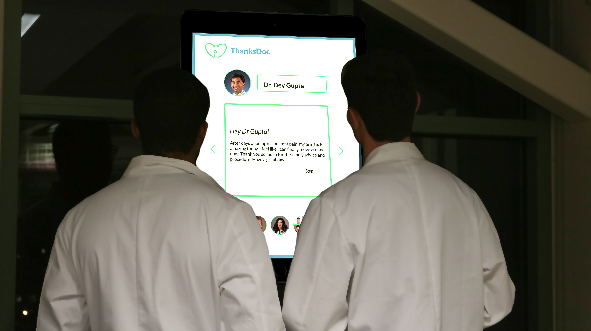
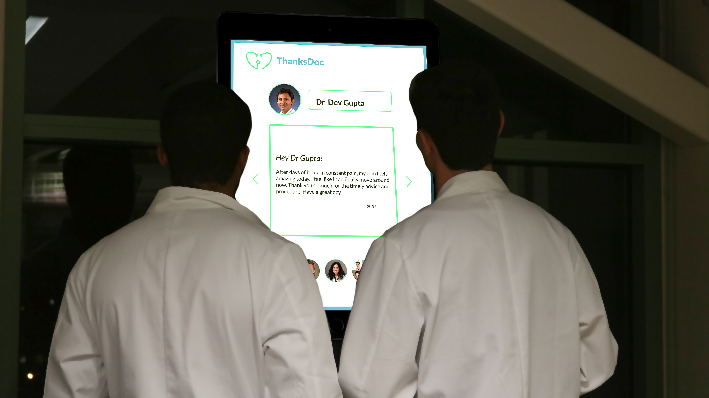
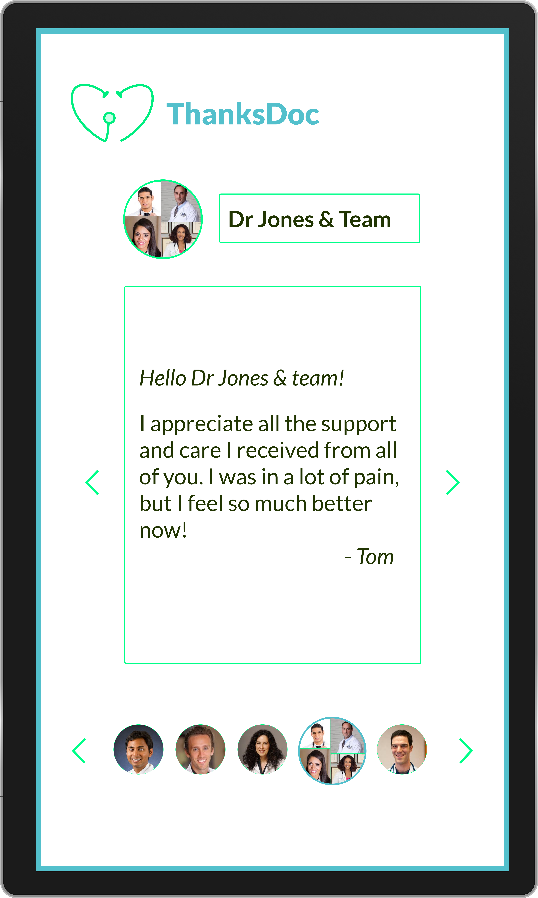
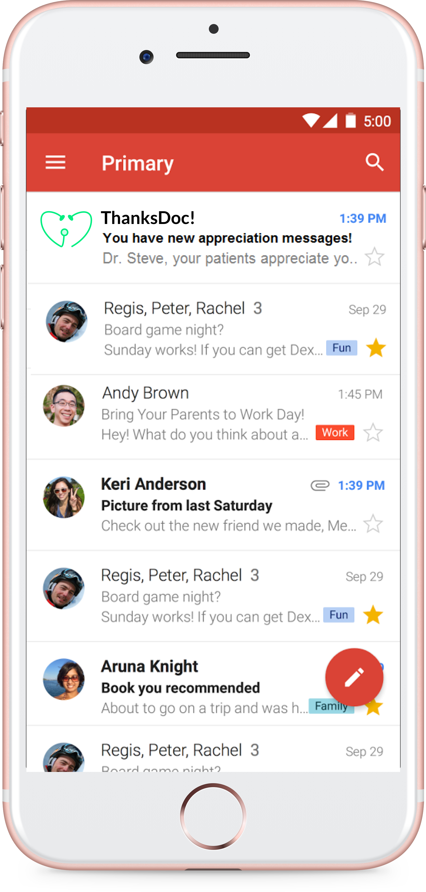
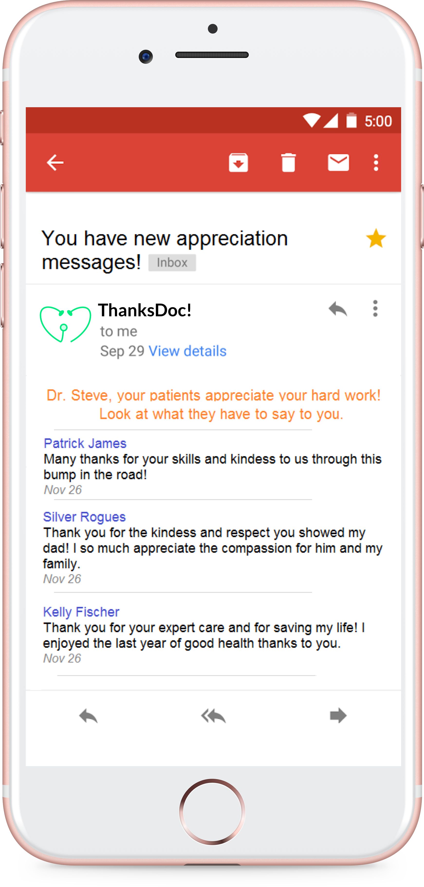

The Problem
Doctors are assumed by the public as leading a cut above average lives, whereas in reality, most doctors are overworked, sleep-deprived and steeped in a work culture that demands that they suck it up and show no weakness. Young doctors, particularly resident doctors, work an average of 80 hours per week, at the expense of their own mental and physiological wellness in order to see their patients go home completely cured.
Yet, there is no efficient way for them to receive timely feedback of a job well done directly from their patients. The current method of hospital service feedbacks is doused in a convoluted and impersonal form of survey system that doctors receive after several months. The lack of positive reinforcement negatively affects the performance and mental health of doctors.
Yet, there is no efficient way for them to receive timely feedback of a job well done directly from their patients. The current method of hospital service feedbacks is doused in a convoluted and impersonal form of survey system that doctors receive after several months. The lack of positive reinforcement negatively affects the performance and mental health of doctors.
Approach
User interviews, field observation and participatory design.
The Team & Key Roles
- Pavithra Ramamurthy - Team Facilitator and User Research
- Philip Begel - Prototyping
- Sean Smith - Concept Sketch and Design Documentation
- Anchal Agarwal - Usability Testing
Role
I moderated the overall work flow of the team, led the user research process and creation of the Pecha Kucha Presentation. All team members shared an equal amount of work on all parts of the design process.
Solution
ThanksDoc!
is a platform that robustly connects patients to their doctors in an effort to provide patient appreciation directly to the doctors in (near) real time. The goal of ThanksDoc! is to motivate doctors actively on a daily basis helping them relieve their mental pressures and tackle their challenging days in a happier state of mind.
Hifidelity Prototype
Gratitude board
Personal email
Finding the right user group
We initially interviewed several doctors of different age groups, levels of expertise and experience in order to understand their work patterns based on the hierarchy within the medical field. Through these preliminary rounds of interviews we were able to recognise resident doctors as the segment who operated under the highest amount of stress, longest work hours and sometimes sleepless nights. Our findings showed that this group were also highly volatile and susceptible to depression owing to the fact that they felt they ‘needed to prove themselves’.
‘Suicide is a huge issue among young doctors. Mental health, depression, burnout and stress are very real. Last year, two med students killed themselves.’
- P1, 1st year resident surgeon, User interview.
Finding the main problem
After several rounds of interviews we engaged in a rigorous exercise of

Mind Mapping helped us make sense of our research and derive insights that would focus our design.
In the beginning we explored the various insights and tried to decide on what problem needed our attention the most. There were several different problems and we had different design ideas that could potentially solve them. We felt like we were caught in a vicious loop of self interest and decided to take step back. We engaged in another set of user interviews with more doctors from our target user group, during which we were able to validate some of our design ideas. We gained a clearer perspective and were then able to hash some of our ideas and develop others.
The key insight that we gained was that
We jumped into a round of quick
These were big questions we needed to answer. We could do an elaborate usability test of course, but we didn’t feel quite ready yet.
mind mapping
of our research data where we recognised recurrent themes in pain points that was prevalent in the young resident doctors. There were several problematic areas but we were trying to find factors that mainly affected the mental happiness of doctors. The question we kept going back to was
“What caused the doctors to burn out the way they did so frequently?”
Mind Map of our user research data
Mind Mapping helped us make sense of our research and derive insights that would focus our design.
In the beginning we explored the various insights and tried to decide on what problem needed our attention the most. There were several different problems and we had different design ideas that could potentially solve them. We felt like we were caught in a vicious loop of self interest and decided to take step back. We engaged in another set of user interviews with more doctors from our target user group, during which we were able to validate some of our design ideas. We gained a clearer perspective and were then able to hash some of our ideas and develop others.
The key insight that we gained was that
the success of patient care is directly related to the mental health of a doctor.
A doctor’s satisfaction, motivation and happiness depend on knowing that they are making a difference in people’s lives through their hard work.
We jumped into a round of quick
Round Robin Sketching
where we explored different ways in which we could bring patient appreciations directly to the doctors. By the end of the sketching round we had a variety of different approaches using artifacts, wearables and even embedded technology. They all seemed well thought out, creative and computer imaginative, but we weren’t sure if we were working within the constraints of convenience and accessibility for doctors.
Why, how and when would they use these? Were they non intrusive and easily accessible? Were they effective?
These were big questions we needed to answer. We could do an elaborate usability test of course, but we didn’t feel quite ready yet.
Help of the Experts
We took our design sketches and visited the Bloomington Hospital in downtown Bloomington, Indiana. With their permission, we observed the ER doctors as they worked, visited the doctors’ rooms, their lounge and their workstations that they use to discuss patient progresses and file documentation. We spoke to the Director of ER, about life in ER as a resident doctor and involved few of the ER doctors in an active session of design ideation to get an idea about the most accessible technologies for doctors.
This opened our eyes to different ways in which doctors could easily interact with technology without losing too much of their working time. Our goal was to embed the positive experience into their daily lives without having to take any time out of their actual work life. We understood how an average day actually works for doctors, at what point the interaction can be embedded for it to work transparently even when doctors have their hands full.
We identified the doctor's common workstation as the best place to embed our experience at Bloomington hospital. We then used our
The first part of the experience would involve a well placed, optimal sized gratitude board that rotates the day’s appreciation messages to the doctors or a team of doctors which can be passively viewed even from a distance, without violating HIPPAA regulations and rules. This aims to encourage, motivate and promote team bonding and community celebration between doctors since a team of doctors are actively involved in each individual patient care.
The second part of the experience directs the appreciation messages from patients to the doctor’s personal email addresses where it is stored separately as ThanksDoc! messages that the doctors can view at their discretion.
We conducted some preliminary interface usability tests using paper prototypes to test the ease of use of the interface and iterated our design based on the observations.
We then created a high fidelity prototype and conducted more usability tests for all the phases, the gratitude board and the email interactions (mobile and desktop) of the application.
Our next step would be to install the prototype inside the common workspace of the doctors to test the efficiency of our design over a period of time.
This opened our eyes to different ways in which doctors could easily interact with technology without losing too much of their working time. Our goal was to embed the positive experience into their daily lives without having to take any time out of their actual work life. We understood how an average day actually works for doctors, at what point the interaction can be embedded for it to work transparently even when doctors have their hands full.
We identified the doctor's common workstation as the best place to embed our experience at Bloomington hospital. We then used our
persona Dr Dev Gupta
, a first year attending physician at Bloomington Hospital to help us build a narrative of the experience.
The first part of the experience would involve a well placed, optimal sized gratitude board that rotates the day’s appreciation messages to the doctors or a team of doctors which can be passively viewed even from a distance, without violating HIPPAA regulations and rules. This aims to encourage, motivate and promote team bonding and community celebration between doctors since a team of doctors are actively involved in each individual patient care.
Appreciation messages display on ThanksDoc gratitude board
HIPPAA is a federal law that makes it easier for people to have health insurance, protect the confidentiality and security of healthcare information and help the healthcare industry control administrative costs.
The second part of the experience directs the appreciation messages from patients to the doctor’s personal email addresses where it is stored separately as ThanksDoc! messages that the doctors can view at their discretion.
View ThanksDoc messages via email
We conducted some preliminary interface usability tests using paper prototypes to test the ease of use of the interface and iterated our design based on the observations.
We then created a high fidelity prototype and conducted more usability tests for all the phases, the gratitude board and the email interactions (mobile and desktop) of the application.

Gratitude Board

Email access on mobile
Our next step would be to install the prototype inside the common workspace of the doctors to test the efficiency of our design over a period of time.
How we plan to complete the design
Study the system effects, iterate on the system, and advertise the results.
Evaluate designs and iterate based on long term usability studies using high fidelity prototypes.

- Full System Design:
- Process of emails being sent out to providers from patients who respond.
- Process of patients receiving emails linking them to access ThanksDoc!
Evaluate designs and iterate based on long term usability studies using high fidelity prototypes.
From left: Philip Begel, Pavithra Ramamurthy(me), Sean Smith & Anchal Aggarwal
What I learnt
- Expertise of the users could be the key to reshaping your design solution.
- User Research is not a framework. We need to be ready to explore a variety ways to know our users and their lives deeply. Shadowing them and becoming their commrades is a start.